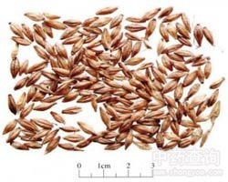

麦芽

拼音
Mài Yá
别名
大麦芽
来源
本品为禾本科植物大麦Hordeum vulgare L. 的成熟果实经发芽干燥而得。将麦粒用水浸泡后，保持适宜温、湿度，待幼芽长至约0.5cm 时，晒干或低温干燥。
生境分布
各地均产。
药材特点
大麦 越年生草本。秆粗壮，光滑无毛，直立，高50-100cm。叶鞘松驰抱茎；两侧有较大的叶耳；叶舌膜质，长1-2mm；叶片扁平，长9-20cm，宽6-20mm。穗状花序长3-8cm（芒除外），径约1.5cm小穗稠密，每节着生3枚发育的小穗，小穗通常无柄，长1-1.5cm（除芒外）；颖线状披针形，微具短柔毛，先端延伸成8-14mm的芒；外稃背部无毛，有5脉，顶端延伸成芳，芒长8-15cm，边棱具细刺，内稃与外稃等长。颖果腹面有纵沟或内陷，先端有短柔毛，成熟时与外稃粘着，不易分离，但某些栽培品种容易分离。花期3-4月，果期4-5月。
性状
本品呈梭形，长8～12mm,直径3～4mm。表面淡黄色，背面为外稃包围，具5脉；腹面为内稃包围。除去内外稃后，腹面有1条纵沟；基部胚根处生出幼芽及须根，幼芽长披针状条形，长约0.5cm。须根数条，纤细而弯曲。质硬，断面白色，粉性。无臭，味微甘。
性味
甘，平。
功能主治
行气消食，健脾开胃，退乳消胀。用于食积不消，脘腹胀痛，脾虚食少，乳汁郁积，乳房胀痛，妇女断乳。 生麦芽：健脾和胃，疏肝行气。用于脾虚食少，乳汁郁积。 炒麦芽：行气消食回乳。用于食积不消，妇女断乳。 焦麦芽：消食化滞。用于食积不消，脘腹胀痛。
用法用量
9～15g；回乳炒用60g。
化学成分
麦芽含淀粉酶、转化糖酶、维生素B、脂肪、磷脂、糊精、麦芽糖、葡萄糖等。
药理作用
1：麦芽因含消化酶及维生素B：有助消化作用
摘录
《中国药典》